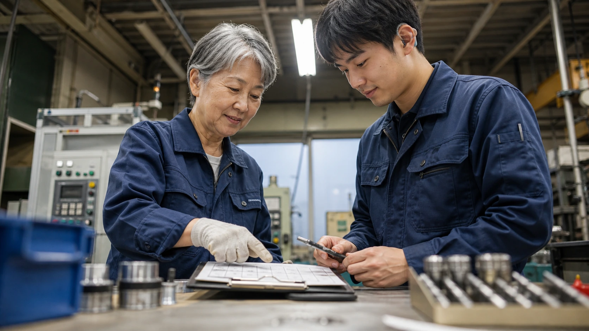

業務改善の例 / 町工場・製造業
見積前の転記を減らし、加工方法と価格の検討を早く始める
図面や注文メールから品番、数量、材料、希望納期を拾うため、社長は複数のファイルを開き直さずに済みます。加工方法、粗利、納期の検討へ早く移り、不足条件を午前中に顧客へ尋ねられます。

先に結論
図面や過去単価を探す作業を減らし、顧客への質問と価格検討を午前中から進められます。
公開事例でRPAが自動化したのは、Web発注データのExcel加工と見積金額の算出です。以下は、見積前の資料整理へAIを使う場合の導入案であり、AI導入の実績ではありません。
町工場の見積は、単価表を見れば終わる仕事ではありません。図面の版数を読み、過去案件と単価を比べ、材料在庫と協力会社の納期を調べます。ところが実際には、Web発注画面から明細を落とし、PDFを開き、Excelへ加工する前処理に毎日時間を取られていました。
注文メール、図面、Web発注データ、過去見積、材料表から、AIが見積準備表の下書きを作ります。社長は原本と下書きの違いを直したうえで、加工方法、価格、納期を検討します。
仕事の変化
図面や過去単価を探す時間を、価格と納期を考える時間に替える
見積のたびに五つの画面とファイルを開く
社長は図面の版数や過去単価を調べる途中で現場対応に呼ばれ、価格検討を中断していました。
図面とメールを開き直さず、不足条件だけを原本で調べる
AIは図面と注文内容から品番、数量、図面版数、材料、希望納期を転記し、登録済みの過去見積から候補を挙げます。社長は図面原本と転記内容を照合し、加工方法と見積金額を決めます。
顧客へ尋ねる不足条件が分かる
図面版数、数量、材料、希望納期の空欄から、顧客へ尋ねる文案を作れます。その分、社長や後継者は価格判断、納期交渉、次の段取りに取りかかれます。
改善後の実感
図面や過去単価を探し回らず、不足している条件だけ顧客へ質問できます。
Web発注データの加工に時間がかかる
Web発注データ、図面、過去単価、部材情報表を開き直し、加工条件を見る前に集中力を使っていました。
見積資料を探し直さず、加工方法と価格の検討から始める
AIが登録済みの過去見積から候補を挙げ、空欄と顧客への質問文案を表へ記載します。
顧客へ尋ねる項目を文案にする
試行では、依頼受信から質問文案を作るまでの時間を導入前と比べます。
見積前の朝
見積資料を探している間に顧客への質問が遅れ、価格の検討を午前中に始められない
朝の事務所では、社長が新規見積のメール、複数の図面PDF、Web発注画面の部品明細、材料会社の納期返信を順番に開いていました。
本当は加工方法を考えたいのに、メールの件名は顧客ごとにばらばらで、図面の版数も分かりにくく、過去単価を見つけても材料や数量が違えばそのまま使えません。
社長が過去ファイルを探している途中で、現場から「この段取りで進めてよいか」と呼ばれ、顧客からは「午前中に質問だけでもほしい」という連絡が入ります。
見積依頼メール、図面、Web発注データ、材料表、過去見積を読み込ませ、「見積準備表を作り、読み取れない項目は空欄にして」と指示します。
AIは登録済みの過去見積から候補を挙げ、品番、数量、図面版数、材料、希望納期の転記案と質問文案を見積準備表へ記載します。
社長は図面原本と見積準備表を照合し、加工の難しさ、価格、粗利、納期、受注可否を決めます。質問文案を社長が読み、顧客へ送るまでの時刻を試行前後で記録します。
改善のイメージ
朝いちばんから、加工方法と見積金額を考えられます。
図面・過去単価・部材情報を同じ案件票にそろえる
図面、過去単価、部材候補が一枚の案件票に並ぶため、社長は価格を決める前に必要な条件を見落としにくくなります。

材料手配と希望納期を同じ表で見る
材料が間に合うか、協力会社の納期に無理がないかを、価格判断の前に同じ表で確認できます。

最後の見積判断は社長が持つ
AIがまとめた図面情報、過去単価、部材候補をもとに、社長が加工の難しさ、品質リスク、顧客事情を判断します。
導入前
導入前は、見積に入る前に図面・過去単価・部材情報・納期を社長が探し集めていました。
必要な情報がPDF、メール本文、添付、Web発注画面、過去ファイルに分かれ、読み込みと転記に時間がかかっていました。
似た形状や材料の履歴を、担当者の記憶とファイル名で探していました。
未チェック点に気づくのが遅く、顧客への質問が夕方になりがちでした。
仕事の流れ
見積依頼を受けたら、AIが見積準備表を作り、社長が原本を照合して価格・納期・受注可否を決める
AIが品番、数量、図面版数、希望納期を転記し、読み取れない箇所は空欄にします。
似た案件、単価の幅、部材候補、加工上の注意点を抽出します。
空欄になった寸法、数量、希望納期、加工条件から質問文案を作ります。
社長が見積金額と受注可否を決め、顧客へ提示する条件を選びます。
人とAIの分担
見積準備表はAIが下書きし、社長は原本照合と価格検討を担う
AIが作る見積準備表
- 図面・メールの要点抽出
- 過去案件の候補検索
- 部材候補・納期リスク・未チェック点の整理
- 顧客への質問案下書き
社長が原本を読み、決める項目
- 加工方法と品質リスクの判断
- 価格、粗利、納期の決定
- 特急料金を付けるか、希望納期を交渉するかを決める
- 正式見積を読み、顧客への送信を承認する
小さく始める
まず、完了済みの見積1件で見積準備表を作る
顧客名を伏せた完了済み1件の注文メール、図面、過去見積、材料表を使い、品番、数量、図面版数、材料、希望納期、過去案件、顧客への質問欄を埋めます。
社長が原本との違いを直し、見積準備にかかった時間と修正箇所を記録してから、実案件へ広げるか決めます。